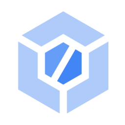

on Agent PlatformSimulate users, grade every trace, fix what fails
 Agent Platform
Agent Platform ADK
ADK Gemini
Gemini
 Google Developer GroupBangkok · DevFest 2026
Google Developer GroupBangkok · DevFest 2026
Agenda
- 01Why evaluate agentsNon-deterministic, multi-turn, and calling tools
- 02Core conceptsEval case · inference · trace · metric
- 03The workflow in codeGenerate scenarios, simulate users, evaluate
- 04Metrics and the flywheelRubrics, custom metrics, loss clusters, optimize
Why evaluate
agents
"It worked when I tried it"
is not a test plan
Agents are hard to test
The final answer can look fine while the path to it was wrong.
Multi-turn
The user asks, the agent asks back, the goal shifts. A single prompt test misses this.
Tool calls
Wrong tool, wrong argument, or a call at the wrong time. You only see it in the trace.
No test data
New agents have no history of real conversations to replay.
Three ways to evaluate

Rapid evaluation
Try new agent logic or a model change against a local ADK agent.


Test case evaluation
Regression tests against a fixed dataset, so a fix today does not break yesterday's cases.

Online monitoring
Score live traces from a deployed agent and watch quality trends across versions.
Core
concepts
Eval case, inference,
trace and metric
Anatomy of an eval case
From eval case to score
Prompt, plan and context
Run the agent. A simulated user replies
Immutable record: model inputs, replies, tool calls
A score per trace from a prebuilt or custom rater
Needs a known good answer to compare against, e.g. exact match.
Judges the trace on its own, e.g. helpfulness or task success.
The workflow
in code
Agent Platform SDK
client.evals
Six steps, one loop
Write them, or generate from instructions and tools
Execute each case, with a simulated user
Every model input, reply and tool call
Task success, tool use, safety and more
Rubric verdicts linked to each test case
Propose a change, rerun, verify it helped
Generate scenarios from the agent
# pip install google-cloud-aiplatform[adk,evaluation]
from vertexai import Client, types
client = Client(project="YOUR_PROJECT_ID",
location="YOUR_LOCATION")
my_agent_info = types.evals.AgentInfo.load_from_agent(
agent=my_agent)
eval_dataset = client.evals.generate_conversation_scenarios(
agent_info=my_agent_info,
config={
"count": 5,
"generation_instruction":
"Generate scenarios where a user asks for a refund.",
},
)
Simulate the user, record the trace
traces = client.evals.run_inference(
agent=my_agent,
src=eval_dataset,
config={
"user_simulator_config": {
"max_turn": 5,
},
},
)
What a simulated session looks like
Score every trace
eval_result = client.evals.evaluate(
traces=traces,
metrics=[
"MULTI_TURN_TASK_SUCCESS",
"MULTI_TURN_TOOL_USE_QUALITY",
],
)
eval_result.show() # Colab or Jupyter
types.RubricMetricMetrics and
the flywheel
Score it, find why it failed,
fix it, score it again
Seven predefined agent metrics
| Metric | Accessor | Rubric | Checks |
|---|---|---|---|
| Final Response Quality | FINAL_RESPONSE_QUALITY | adaptive | The last answer, against criteria built from the config and prompt |
| Hallucination | HALLUCINATION | static | Each claim in the answer is backed by a tool result |
| Tool Use Quality | TOOL_USE_QUALITY | adaptive | Tool choice, parameters, sequence |
| Safety | SAFETY | static | PII, hate, harassment, dangerous or explicit content |
| Task Success | MULTI_TURN_TASK_SUCCESS | adaptive | Was the user's goal reached? |
| Trajectory Quality | MULTI_TURN_TRAJECTORY_QUALITY | adaptive | How was it reached: logical, efficient? |
| Multi-turn Tool Use | MULTI_TURN_TOOL_USE_QUALITY | adaptive | Right tool, right args, right time |
Use predefined metrics in the SDK
from vertexai import evals, types
# Run an evaluation with predefined metrics
result = client.evals.evaluate(
dataset=eval_dataset,
metrics=[
types.RubricMetric.FINAL_RESPONSE_QUALITY,
types.RubricMetric.TOOL_USE_QUALITY,
types.RubricMetric.HALLUCINATION,
types.RubricMetric.SAFETY,
],
)
# Visualize results in Colab
result.show()
Two kinds of rubric
Adaptive rubric
The judge writes criteria for this case, then gives each a pass or fail with a rationale.
Static rubric
The same fixed criteria for every case. The result is one score between 0 and 1.
The Metric Registry
Save your evaluation criteria once. Apply them to offline runs and online monitors alike.

Predefined
Managed by Google, including multi-turn raters for task success, tool use and trajectory.
Custom LLM
A natural-language rubric. A judge LLM scores the response against your criteria and rating scale.
Custom code
A Python function that checks behavior exactly, such as output format or a tool response.
Register a custom LLM metric
from vertexai import evals, types
tone_check_metric = types.LLMMetric(
name="tone_check",
prompt_template="Analyze the tone of the response ...",
result_parsing_function="""
import json, re
def parse_results(responses):
response = json.loads(responses[0])
return {"score": response.get("score", 0.0),
"explanation": response.get(
"explanation", "default explanation")}
"""
)
tone_check_metric_path = client.evals.create_evaluation_metric(
metric=tone_check_metric
)
Register a custom code metric
from vertexai import evals, types
accuracy_metric_code = """
def evaluate(instance: dict) -> float:
agent_data = instance.get('agent_eval_data', {})
turns = agent_data.get('turns', [])
for turn in turns:
...
"""
accuracy_metric = types.CodeExecutionMetric(
name="multi_turn_accuracy",
custom_function=accuracy_metric_code
)
accuracy_metric_path = client.evals.create_evaluation_metric(
metric=accuracy_metric
)
Manage metrics in the console
- 1Open Agent Platform › Agents › Evaluation in the Google Cloud console
- 2Click the Metrics tab to see the registry
- 3Click New metric, then choose Custom LLM metric or Custom code metric
- 4For an LLM metric, the Sample buttons fill in instructions, criteria such as Clarity and Excitement, and rating scores
- 5Click a metric name to view it read-only. More options lets you Duplicate or Delete it
Group failures into loss clusters
loss_clusters = client.evals.generate_loss_clusters(eval_result=eval_result)
Failures are sorted into a fixed taxonomy, for example for Task Success:
The Quality Flywheel
compare
result = client.optimizer.optimize(
targets=["system_prompt"],
benchmark=eval_result,
tests=eval_dataset,
)
Triage, top down
Which metric dropped?
Which verdicts failed, and why?
Is it one pattern or many?
Prompt, tool config or data?
Dashboard › Evaluation shows trends across versionsEvaluate agents like software
Simulate
Generate scenarios from the agent and let a simulated user talk to it.
Score
Rubric metrics grade the answer and the path, with reasons.
Explain
Loss clusters turn many failures into a few causes.
Improve
Optimize the prompt, re-run, and track quality in production.
Start with generate_conversation_scenarios on your ADK agent today
Read more and try it
Results
View and analyze resultsAgent skills
google-agents-cli-eval · agent-platform-eval-flywheelADK
adk.devThank you
Q & A
Punsiri Boonyakiat
Google Developer Expert in Cloud AI